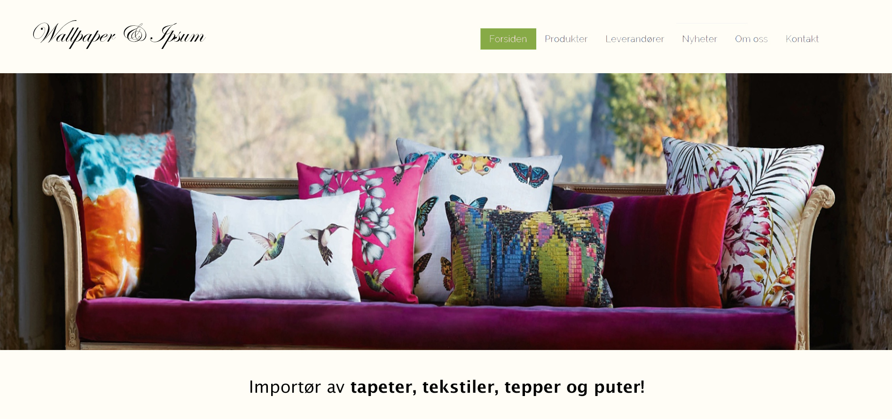

Endringer i design
Generelle endringer
For dette prosjektet valgte vi å fjerne unødvendige elementer fra forrige iterasjon. Elementer slik som undersider til leverandører og dropdown, er fjernet. Nye elementer slik som parallakse bilde scrolling er lagt til. Navbaren og footeren har også fått en ryddigere look.
Hjemmesiden
- Gammelt design:
Vi tok utgangspunktet i mockupen vår og laget en forside som i utgangspunktet var estetisk satt opp. For å gjøre siden mer interaktiv har vi laget en parallakse effekt når du scroller på bildene der du får info om produkter og leverandører.
- Resultat

Når man blar litt nedover vil det komme en parallakse effekt.

Og nedover...

Vi tok bort dropdown ved hovering, og heller har scaling dropdown meny, når vinduet til nettleseren blir tilstrekkelig liten nok.
- Gammelt design:
- Nytt design:

- Gammelt design:

- Nye design:
Vi valgte å fjerne det øverste bildet av estetiske årsaker.

Produktsiden er nå lettere å navigere seg rundt i. Hvert bilde kan man klikke seg inn på for å lese mer. Navbaren og footer har nå også et hint av skygge for å få en mer modularitetslook.
Footeren er også mer kompakt og mer leselig, vi valgte å fjerne siste nytt fra footeren da det hadde vært mye tekst. Istedenfor kan brukeren nå registrere seg på nyhetsbrevet.

Klikker man seg inn på en underside av et produkt får man mer info om produktet samt en knapp øverst til venstre for å ta deg tilbake.

Vi valgte å fjerne undersider til leverandørene og heller ha alt samlet, der du kan lese litt om hver leverandør. Denne måten ble mer oversiktlig og lettere å se på.

- Kontakt oss siden.